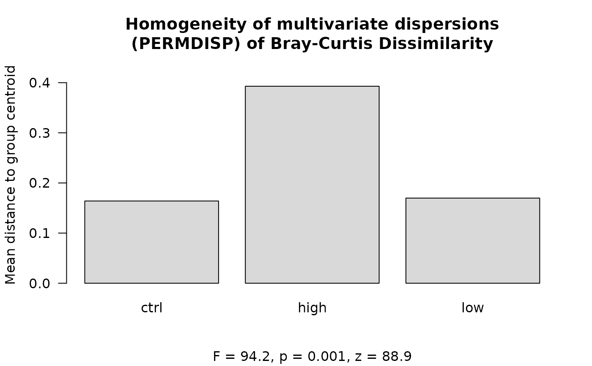

Tests whether groups of samples differ in how spread out they are: their
multivariate dispersion, or beta diversity. Gives the same results as
vegan::betadisper() followed by vegan::permutest(): each sample's
distance to its group's centre, each group's mean distance, and a
permutation test of whether those distances differ between groups. Note
that the default centre differs: see type.
Usage
permdisp(
dm,
groups,
data = NULL,
type = "centroid",
bias_adjust = FALSE,
pairwise = FALSE,
p_adjust = "holm",
permutations = 999L,
strata = NULL,
seed = 0L,
cpus = n_cpus()
)Arguments
- dm
A
distobject, such as frombeta_div()orbray(), or a symmetric numeric matrix of distances. Must not containNAs or negative values.- groups
Each sample's group: a vector or factor with one value per sample, matched to the samples in
dmby name when both are named, else in the same order asdm. Or, whendatais given, the name of one of its columns (or a vector with one value per row ofdata). Values are treated as categories, even if they are numbers. Groups with no samples left are dropped.- data
Optional sample metadata: a data frame with one row per sample, holding
groups(andstrata) as columns. Rows are matched to the samples indmby row name, and rows for other samples are ignored; without row names, they must be in the same order asdm. Default:NULL.- type
The group centre to measure distances from:
'centroid': The centroid (multivariate mean), as in Anderson's (2006) original PERMDISP. The default: exact, and much faster for large data sets.'median': The spatial median, the point with the smallest sum of distances to the group's samples. More robust to skewed data and outlying samples. The default ofvegan::betadisper()and scikit-bio'spermdisp, so passtype = 'median'to compare with them.
- bias_adjust
Correct the distances for small group sizes, by multiplying each by \(\sqrt{n_g / (n_g - 1)}\), for a group of \(n_g\) samples (Stier et al. 2013), as
betadisper(bias.adjust = TRUE). Default:FALSE.- pairwise
Also test each pair of groups with a \(t\) statistic, as
permutest(pairwise = TRUE), and adjust the pairs' p-values for multiple testing withp_adjust. Default:FALSE.- p_adjust
With
pairwise = TRUE, how to adjust the pairs' p-values for multiple testing: one ofstats::p.adjust.methods('holm','hochberg','hommel','bonferroni','BH','BY','fdr', or'none'), matched asstats::p.adjust()matches them. Giving it withoutpairwise = TRUEis an error. Default:'holm'.- permutations
The number of permutations. Default:
999. Alternatively, a matrix with one permutation of1:nper row, as frompermute::shuffleSet(), to use instead of random ones.- strata
Permute samples only within these groups (blocks), for designs such as repeated measures. With
data, the name of one of its columns, or a vector with one value per row ofdata. Withoutdata, a vector with one value per sample, matched to the samples by name when it has names, otherwise in the same order. Default:NULL(free permutation).- seed
An integer seed for the random permutations. The same seed gives the same p-values. Default:
0- cpus
How many parallel processing threads should be used. The default,
n_cpus(), will use all logical CPU cores.
Value
A list of class c("ecodive_permdisp", "ecodive_test"), with
these fields:
statistic: The \(F\) statistic, namedF.p_value: The permutation p-value (NAwithout permutations).z: How far \(F\) lies from its permuted values, in standard deviations: \((F - mean(F_{perm})) / sd(F_{perm})\), assummary(vegan::permustats()).NAwith fewer than 2 permutations.n_perm: The number of permutations.table: The one-way ANOVA of the distances on the groups, aspermutest()$tab: a data frame (of class"anova") with rows"Groups"and"Residuals", and columnsDf,Sum Sq,Mean Sq,F,N.Perm, andPr(>F).distances: Each sample's distance to its group's centre (named by sample, whendmhas names), asbetadisper()$distances.dispersions: Each group's mean distance, asbetadisper()$group.distances.type:'median'or'centroid'.bias_adjust:TRUEorFALSE.pairwise: Withpairwise = TRUE, a data frame with one row per pair of groups, named like"a-b", and columnst(the \(t\) statistic of groupaminus groupb),Df,z(how far \(t\) lies from its permuted values, in standard deviations),n(the pair's samples),n_perm,p_value(from the \(t\) distribution),p_value_perm(from the permutations),p_adjustedandp_adjusted_perm(each p-value column adjusted across the pairs withstats::p.adjust(method = p_adjust)). A pair with a group of one sample has no \(t\) (NA, with a warning), as inpermutest(). OtherwiseNULL.p_adjust: Withpairwise = TRUE, thep_adjustmethod used. OtherwiseNULL.permutation: How samples were permuted:'free','within strata', or'supplied matrix'.
Attribute f_perm holds the \(F\) statistic of each permutation, as
permutest()$perm, and, with pairwise = TRUE, attribute t_perm is a
matrix of the \(t\) statistics of each permutation (rows) for each
pair (columns).
Details
A significant PERMANOVA (permanova()) can come from groups that differ
in location, in dispersion, or both. A non-significant permdisp() result
supports reading a PERMANOVA difference as a difference in location.
Method
PERMDISP (Anderson 2006) places the samples in the principal coordinates
of dm (pcoa()), finds each group's centre, and measures each sample's
distance to it. For distances that are not Euclidean, such as
Bray-Curtis, some principal coordinates are imaginary (their eigenvalues
are negative); following Anderson (2006), a sample's squared distance to
its centre is the squared distance on the real axes minus that on the
imaginary ones, and is set to zero, with a warning, when that is negative.
The test is the one-way ANOVA \(F\) of these distances. As in
permutest(), the p-value comes from permuting the ANOVA's residuals (each
distance minus its group's mean) among the samples: the proportion of
permutations, counting the observed one, with an \(F\) at least as
large, \((1 + \#\{F_{perm} \ge F\}) / (1 + permutations)\). Permuted
statistics within sqrt(.Machine$double.eps) of the observed one count as
ties. Pairwise \(t\) statistics permute the distances themselves, and
count \(|t_{perm}| \ge |t|\).
Choosing type
'centroid', the default, measures dispersion around the same centres thatpermanova()does: the squared distances to the centroids sum to PERMANOVA's within-group sum of squares. So it is the direct check of whether a significant PERMANOVA could come from differences in dispersion (Anderson 2006; Anderson et al. 2006). It is also exact, and needs only the distances within each group, so it is much faster for many samples (see below).'median'is the robust alternative for skewed or outlier-prone data, as the median-based (Brown-Forsythe) version of Levene's test is (Anderson 2006). It is the default ofvegan::betadisper()and of scikit-bio's (and so QIIME 2's)permdisp: to compare with them, passtype = 'median'.
betadisper() stops its search for the spatial median early, so its
distances to medians are accurate only to about \(10^{-5}\);
permdisp() solves for the median exactly.
Speed and memory
A sample's distance to its group's centroid needs only the distances
within its group: $$z_i^2 = \frac{1}{n_g}\sum_{j \in g} d_{ij}^2 -
\frac{1}{2n_g^2}\sum_{j,k \in g} d_{jk}^2,$$ which already accounts for
the imaginary axes. So type = 'centroid' needs no principal coordinates
at all. The spatial median does need them: a full eigendecomposition of
an \(n \times n\) matrix, which takes about as long as in
betadisper() (a few seconds for 1000 samples). Each permutation then
costs only one pass over the \(n\) distances, and permutations run in
parallel.
Reproducibility
The permutations come from seed, not from R's random number generator,
so set.seed() has no effect, and each permutation has a random number
stream of its own. Results are identical from run to run and for any
number of cpus. The random permutations differ from permutest()'s, so
p-values agree with it only up to sampling error, unless the same
permutations matrix is given to both.
Differences from betadisper() and permutest()
type = 'centroid'gives the same distances and \(F\) asbetadisper(), to rounding error.type = 'median'finds each spatial median to full precision.betadisper()stops its optimizer (optim()'s BFGS) early, so its distances to the median are off by up to about \(10^{-5}\) (relative), and its \(F\) agrees withpermdisp()'s to about 4 or 5 significant digits.Samples with an
NAgroup are an error, wherebetadisper()drops them.With
bias_adjust = TRUE, a group of one sample keeps a distance of 0, wherebetadisper()givesNaN.Pairwise permutation p-values count permuted \(|t|\) within
sqrt(.Machine$double.eps)of the observed one as ties, as for \(F\).Pairwise p-values are also adjusted for multiple testing (
p_adjust, Holm's method by default), in columns of their own;permutest()adjusts nothing. Unlike ecodive's other tests'pairwise, the pairs are not tested on their own: their \(t\) statistics come from the whole test's distances to the group centres, and their permutation p-values from its permutations, as inpermutest().stratapermutes freely within strata. For other restricted designs, pass apermutationsmatrix frompermute::shuffleSet().betadisper()'ssqrt.distandaddoptions transform the distances first: passsqrt(dm)instead, for instance.
References
Anderson, M. J. (2006). Distance-based tests for homogeneity of multivariate dispersions. Biometrics, 62(1), 245-253. doi:10.1111/j.1541-0420.2005.00440.x
Anderson, M. J., Ellingsen, K. E., & McArdle, B. H. (2006). Multivariate dispersion as a measure of beta diversity. Ecology Letters, 9(6), 683-693. doi:10.1111/j.1461-0248.2006.00926.x
Stier, A. C., Geange, S. W., Hanson, K. M., & Bolker, B. M. (2013). Predator density and timing of arrival affect reef fish community assembly. Ecology, 94(5), 1057-1068. doi:10.1890/11-1983.1
Vardi, Y., & Zhang, C.-H. (2000). The multivariate L1-median and associated data depth. Proceedings of the National Academy of Sciences, 97(4), 1423-1426. doi:10.1073/pnas.97.4.1423
Examples
# 30 samples in three groups. The 'high' group is more variable.
set.seed(1)
counts <- matrix(rpois(30 * 20, 5), 30, 20)
rownames(counts) <- paste0('S', 1:30)
meta <- data.frame(
row.names = rownames(counts),
treatment = rep(c('ctrl', 'low', 'high'), each = 10) )
high <- meta$treatment == 'high'
counts[high, ] <- counts[high, ] * rpois(10 * 20, 1)
dm <- bray(counts)
# Do the treatment groups differ in dispersion?
res <- permdisp(dm, 'treatment', meta)
res
#> Homogeneity of multivariate dispersions (PERMDISP) of Bray-Curtis Dissimilarity
#>
#> F = 94.2, p = 0.001, z = 88.9
#> Permutations: 999 (free)
#>
#> Distances to group centroids:
#> ctrl high low
#> 0.1640 0.3929 0.1698
#>
#> Df Sum Sq Mean Sq F N.Perm Pr(>F)
#> Groups 2 0.3406 0.17030 94.2 999 0.001 ***
#> Residuals 27 0.0488 0.00181
#> ---
#> Signif. codes: 0 ‘***’ 0.001 ‘**’ 0.01 ‘*’ 0.05 ‘.’ 0.1 ‘ ’ 1
# Each group's mean distance to its centroid.
res$dispersions
#> ctrl high low
#> 0.1640327 0.3928983 0.1698156
plot(res)

# Distances to spatial medians, as vegan::betadisper()'s default,
# with each pair of groups tested.
res <- permdisp(dm, meta$treatment, type = 'median', pairwise = TRUE)
res$pairwise
#> t Df z n n_perm p_value p_value_perm
#> ctrl-high -9.0539173 18 -8.6372143 20 999 4.029174e-08 0.001
#> ctrl-low -0.4405987 18 -0.3886739 20 999 6.647493e-01 0.662
#> high-low 8.6234560 18 8.4716805 20 999 8.282327e-08 0.001
#> p_adjusted p_adjusted_perm
#> ctrl-high 1.208752e-07 0.003
#> ctrl-low 6.647493e-01 0.662
#> high-low 1.656465e-07 0.003